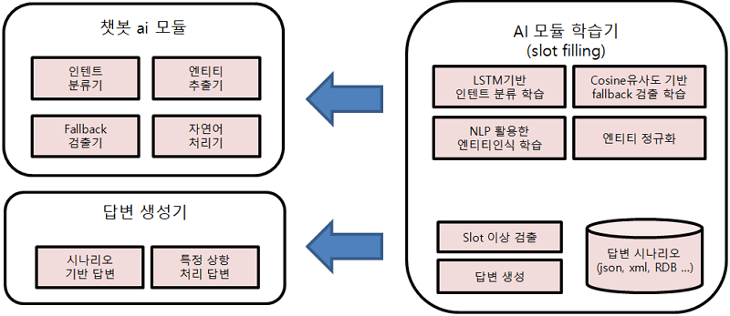

챗봇은 사용자의 자연어 입력에 자동으로 응답하는 인공지능 시스템이다. 과거에는 단순히 키워드에 따라 정해진 문장을 반환하는 규칙 기반(rule-based) 챗봇이 주류였지만, 오늘날 챗봇은 사용자의 의도 파악, 대화 맥락 유지, 창의적인 응답 생성까지 수행한다. 이러한 고도화는 인공신경망(Artificial Neural Network, ANN)이라는 AI 기술 덕분이다.

나눔기술, 챗봇 구조도
인공신경망은 인간의 뇌 신경세포(뉴런)를 모방해 만든 수학적 모델로 입력 값을 받아 처리하고 결과 값을 출력하는 계층구조이다. 입력층-은닉층-출력층의 구조이며 여러 층을 거치며 데이터를 추상화한다. 보다 복잡한 데이터를 처리할 수 있어 이미지 인식, 음성 인식, 자연어 처리 등 다양한 분야에서 활용된다. 특히 수학적으로 은닉층의 노드는 선형결합+비선형 함수로 구성되있기에, 이 구조를 반복할수록 점점 더 복잡한 패턴을 인식할 수 있게 된다.
챗봇에서의 ANN은 위 사진과 같은 세 가지 주요 과정을 거친다. 각각 사용자의 문장을 분석해 의도와 개체를 추출하고, 문맥을 추적하고 흐름을 제어한 후, 사용자에게 자연스러운 문장을 생성하여 응답하는 과정이다.
이와 같이 챗봇은 단순한 문장 응답 기계를 넘어 사람처럼 언어를 이해하고 문맥에 따라 대응하는 지능형 시스템으로 발전해왔다. 그 중심에는 인공신경망, 특히 Transformer 기반의 언어 모델이 존재한다. 인공신경망은 단어 간의 관계를 학습하고 더 자연스러운 응답을 생성하며 사용자와 더 인간다운 상호작용을 가능하게 만든다. 앞으로도 챗봇기술은 더욱 정교해진 신경망 모델을 바탕으로 AI 기술을 전반적으로 성장시키며 인간과 기계의 의사소통 방식에 큰 영향을 줄 것이다.